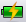
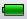
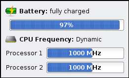
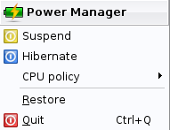
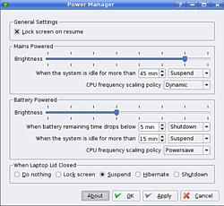

Wiki
Mitmachen
- Wikiartikel anlegen
- Howto anlegen
- Wiki-Referenz
- Wiki-Syntax
- Baustellen
- Artikelideen
- Ungetestete Artikel
- Ausbaufähige Artikel
- Fehlerhafte Artikel
- Rund ums Wiki
Konfiguration
- Backlinks anzeigen
- Exportieren
KDE Powermanager
Archivierte Anleitung
Dieser Artikel wurde archiviert, da er - oder Teile daraus - nur noch unter einer älteren Ubuntu-Version nutzbar ist. Diese Anleitung wird vom Wiki-Team weder auf Richtigkeit überprüft noch anderweitig gepflegt. Zusätzlich wurde der Artikel für weitere Änderungen gesperrt.
Anmerkung: Dieser Artikel ist veraltet, eine Alternative ist der Artikel KDE Energieverwaltung
Zum Verständnis dieses Artikels sind folgende Seiten hilfreich:
Der KDE Powermanager ist ein kleines Applet, welches zwei Funktionen erfüllt:
Festlegung bzw. Änderung der Richtlinien für das Powermanagement
Festlegung bzw. Änderung der Richtlinien für die Skalierung des Prozessortakts
Installation¶
Der Powermanager ist in der Standardinstallation von Kubuntu enthalten. Bis einschließlich Kubuntu 8.04 Hardy Heron allerdings nur in der KDE 3.x Varianten, ab Kubuntu 8.10 Interpid Ibex auch in KDE 4. Ansonsten kann der Powermanager aber über das Paket
kde-guidance-powermanager (KDE 3 bis Hardy)
bzw.
guidance-power-manager (KDE4 ab Intrepid)
installiert werden [1].
Benutzung¶
Hinweis:
Die Optik des Power-Managers unter KDE4 ist zwar etwas anders als die der KDE3 Version, die Funktionalität ist aber gleich
Der Powermanager ist per Voreinstellung aktiviert. Ist der Computer an die Stromversorgung angeschlossen, so sieht man dieses  Icon in der Kontrollleiste, ist der Computer / Laptop im Batteriebetrieb, so sieht man dieses  Icon. Möchte man die aktuelle Art der Stromversorgung bzw. bei Laptops den Ladezustand der Batterie sowie die aktuelle CPU-Frequenz und den laufenden Scaling Governor sehen, so fährt man mit dem Mauszeiger über das Powermanager-Icon und sieht kurz später die entsprechenden Werte, wie z.B.

Um Einstellung zu ändern gibt es zwei Varianten.
Ein Rechtsklick auf das Powermanager-Icon öffnet ein kleines Menü:

Hier kann man den Computer in den Stand-By Modus schalten ("Hibernate") oder ein Suspend-to-Disk ("Suspend") anstoßen. Des weiteren lässt sich hier das Verhalten einstellen, wie die CPU die Taktfrequenz skaliert, und zwar über den Menüpunkt "CPU policy". Hier stehen drei Policies zur Auswahl: "Dynamic" (entspricht dem Ondemand Governor), "Powersave" und "Performance" (entsprechen den gleichnamigen Governorn).
Ausführlich Einstellmöglichkeiten erhält man, wenn man mit der linken Maustaste auf das Powermanager-Icon klickt:

Unter "General Setting" kann man über den Punkt "Lock Screen on resume" einstellen, ob man sich beim Aufwachen aus dem Stand-By / Syspend-to-Disk neu anmelden muss oder nicht.
Unter "Mains Powered" und "Battery Powered" kann man die Bildschrimhelligkeit ("Brightness") einstellen sowie festlegen, was das System nach X Minuten Leerlauf ("When the system is idle for more than") machen soll. Unter "Battery Powered" kann man weiterhin einstellen wie sich das System verhalten soll, wenn die Restbatterielaufzeit kleiner X Minuten beträgt. Außerdem kann für den jeweiligen Modus gewählt werden, welcher Scaling Governor die Taktfrequenzänderung der CPU(s) bestimmt ("CPU frequency scaling policy").
Im letzten Punkt "When Laptop Lid is closed" kann man Einstellen, wie das System sich verhält, wenn der Deckel des Laptops geschlossen wird.
Nutzt man den Powermanager auf einem Desktop System, so sind alle Laptop-spezifischen Punkte natürlich ausgeblendet.
Diese Revision wurde am 22. April 2013 16:23 von frustschieber erstellt.
- Erstellt mit Inyoka
-
 2004 – 2017 ubuntuusers.de • Einige Rechte vorbehalten
2004 – 2017 ubuntuusers.de • Einige Rechte vorbehalten
Lizenz • Kontakt • Datenschutz • Impressum • Serverstatus -
Serverhousing gespendet von